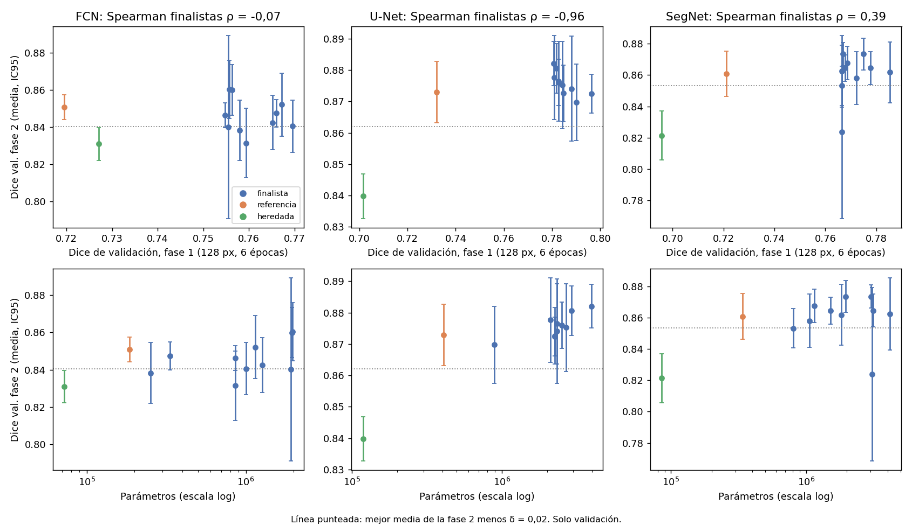

Búsqueda de arquitectura de las compactas#
FCN, U-Net y SegNet son las tres redes del benchmark sin una arquitectura fijada por su artículo: se usaron las
versiones compactas heredadas del E1. La sección 14 de la guía pide, para esas redes, recorrer el espacio de
arquitecturas en dos fases. El protocolo se fijó el 22/11, antes de correr (docs/PROTOCOLO_BUSQUEDA_ARQUITECTURA_E2.md):
Espacio. Tres bloques con anchos en {16, 32, 64, 128, 256} y dropout 0,2 encendido o apagado en cada bloque: 1.000 arquitecturas por familia. La heredada, (16, 32, 64) sin dropout, está dentro.
Ajuste previo de la tasa. Tres tasas con la arquitectura de referencia (64, 64, 64)/(0, 1, 0). La regla, fijada antes, se queda con la receta (0,001) salvo que otra tasa gane por 0,005 o más.
Fase 1, cribado. Las 1.000 por familia con una semilla, a fidelidad reducida (128 px y 6 épocas, elegida por presupuesto con el piloto), más 40 repeticiones para medir el ruido de semilla.
Fase 2, confirmación. Los 10 mejores de la fase 1, la referencia y la heredada, con las cinco semillas del benchmark, a 256 px y 30 épocas.
Selección. Mayor media de validación. Si hay empate técnico con la mejor (diferencia menor que δ = 0,02 o intervalos al 95 % solapados), gana la de menos parámetros.
Todo se mide en validación. El test no se cargó: esta búsqueda es exploratoria y no cambia las conclusiones del
benchmark. Se ejecutó completa en Colab (colab/Busqueda_Arquitectura_E2.ipynb, L4); la fase 2 terminó el 26/11.

Cifras por familia#
FCN |
U-Net |
SegNet |
|
|---|---|---|---|
Tasa del ajuste previo |
0,001 |
0,0003 |
0,0003 |
Fase 1: media (DE entre arquitecturas) |
0,723 (0,016) |
0,729 (0,020) |
0,721 (0,026) |
σ semilla / σ arquitectura (r) |
0,90 |
0,89 |
0,67 |
Mayor media en fase 2 |
|
|
|
Ganadora por la regla (menos parámetros en el empate) |
|
|
|
Mayor media − ganadora |
0,010 |
0,009 |
0,013 |
Empate técnico / equivalentes TOST |
11 / 4 |
11 / 7 |
11 / 5 |
Ganadora − heredada (IC95 t) |
0,020 [0,011; 0,028] |
0,033 [0,026; 0,041] |
0,039 [0,020; 0,059] |
Ganadora − heredada (IC95 bootstrap por grupos) |
[0,010; 0,030] |
[0,025; 0,041] |
[0,028; 0,051] |
Lectura fijada antes |
el ganador supera a la heredada por menos de δ |
el ganador supera a la heredada por δ o más |
el ganador supera a la heredada por δ o más |
Heredada en fase 2 / benchmark (val) |
0,831 / 0,831 |
0,840 / 0,832 |
0,821 / 0,806 |
Spearman fase 1 − fase 2 (10 finalistas) |
-0,07 (p = 0,855) |
-0,96 (p < 0,001) |
0,39 (p = 0,260) |
Rango de la referencia en fase 1 |
593 |
440 |
563 |
DE arquitecturas / DE semilla |
1,36 |
2,67 |
2,37 |
R² del modelo de anchos y dropout |
0,39 |
0,39 |
0,57 |
Sin dropout − con dropout (Wilcoxon p) |
0,0022 (p = 0,015) |
0,0021 (p = 0,232) |
0,0045 (p < 0,001) |
Generado por scripts/lectura_busqueda_arquitectura_e2.py desde RESUMEN.json, fase1.csv y los result.json. Solo validación; el test no se cargó (test_evaluado = false). Exploratorio: no cambia la selección ni las conclusiones del benchmark cerrado. Reglas de lectura fijadas antes en docs/PROTOCOLO_BUSQUEDA_ARQUITECTURA_E2.md.
Ejecución#
Fase 1 completa: 1.000 arquitecturas por familia, más 40 repeticiones con otra semilla para σ_semilla (3.120 corridas), a la fidelidad B de
fidelidad.json(128 px, todo train, 6 épocas).k = 10 (r = σ_semilla/σ_arquitectura ≤ 1 en las tres: FCN 0,90, U-Net 0,89, SegNet 0,67). Fase 2: 12 arquitecturas por familia (10 finalistas, la referencia (64, 64, 64)/(0, 1, 0) y la heredada (16, 32, 64)/(0, 0, 0)) con las semillas 11, 23, 37, 53 y 71, a 256 px y 30 épocas con paciencia 5: 180 corridas, ninguna abierta.
Cómputo registrado, suma de los segundos de cada corrida en L4: ajuste 0,2 h (9 corridas), fase 1 124,4 h (3.120 corridas), fase 2 119,0 h (180 corridas), piloto 0,1 h (30 corridas); total 243,7 h. Corrían cuatro procesos a la vez en una sola L4, así que el tiempo de reloj fue cerca de la cuarta parte (unas 61 h).
1. Ganadora por la regla fijada antes#
La regla elige la misma arquitectura en las tres familias: a0498 (64, 64, 64)/(0, 1, 0), que es la referencia. No es la de mayor media en ninguna. Ocurre porque el empate técnico (diferencia con la mejor menor que δ = 0,02 o intervalos al 95 % solapados) abarca a los 11 finalistas no heredados de cada familia: con cinco semillas los intervalos miden de 0,01 a 0,05 y todas las medias caen a menos de δ de la mejor. Dentro del empate gana la de menos parámetros, y la referencia es la más pequeña de ese grupo. La heredada, más pequeña aún, queda fuera del empate en las tres.
FCN: ganadora 0,8508 con 186.497 parámetros; mayor media
a0982(256, 256, 64)/(1, 1, 0) 0,8603 con 1.961.921 (10,5 veces más). Diferencia 0,0095, menor que δ. Equivalentes a la mejor por TOST: 4 de 12 (incluida la ganadora).U-Net: ganadora 0,8729 con 407.937 parámetros; mayor media
a0593(64, 256, 256)/(0, 0, 1) 0,8821 con 3.948.033 (9,7 veces más). Diferencia 0,0092, menor que δ. Equivalentes a la mejor por TOST: 7 de 12 (la ganadora no está entre ellas).SegNet: ganadora 0,8607 con 338.369 parámetros; mayor media
a0756(128, 128, 256)/(1, 0, 0) 0,8734 con 1.954.945 (5,8 veces más). Diferencia 0,0127, menor que δ. Equivalentes a la mejor por TOST: 5 de 12 (la ganadora no está entre ellas).
En U-Net y SegNet la regla elige una arquitectura que el TOST no certifica equivalente a la mejor: el criterio de empate (δ o intervalos solapados) es más laxo que la equivalencia. La regla se aplica tal como se fijó y la diferencia se declara.
Ninguna ganadora tiene un ancho en el borde del espacio (16 o 256): el óptimo por la regla no está recortado por el espacio. La de mayor media sí usa 256 en algún bloque en FCN, U-Net, SegNet.
2. Frente a la compacta heredada#
Ganadora menos heredada, las dos en la fase 2 con la misma receta y las mismas semillas (diferencia pareada por semilla, IC95 t; bootstrap por los 122 grupos de validación, 2.000 remuestreos; TOST con ±δ):
FCN: 0,0199, IC95 t [0,0113; 0,0285], bootstrap [0,0103; 0,0303]; TOST p = 0,485. Lectura: el ganador supera a la heredada por menos de δ.
U-Net: 0,0332, IC95 t [0,0256; 0,0407], bootstrap [0,0254; 0,0413]; TOST p = 0,996. Lectura: el ganador supera a la heredada por δ o más.
SegNet: 0,0394, IC95 t [0,0201; 0,0586], bootstrap [0,0279; 0,0515]; TOST p = 0,975. Lectura: el ganador supera a la heredada por δ o más.
Según la lectura fijada antes: en U-Net y SegNet la ganadora supera a la heredada por δ o más, así que el benchmark subestimó esas dos familias en validación. En FCN la mejora es real (el intervalo excluye el cero) pero su estimación queda justo por debajo de δ y el TOST no acredita equivalencia: ni subestimación declarada ni herencia justificada. En ninguna familia la heredada cae en el conjunto equivalente a la mejor.
Cuánto de esa mejora es tasa y cuánto arquitectura. El ajuste previo cambió la tasa de 0,001 a 0,0003 en U-Net y SegNet; en FCN la dejó igual. Comparación descriptiva con las cinco corridas originales del benchmark (validación):
FCN: benchmark 0,8309; heredada en la fase 2 0,8309 (+0,0000, efecto de la tasa); ganadora 0,8508 (+0,0199 sobre la heredada, efecto de la arquitectura).
U-Net: benchmark 0,8320; heredada en la fase 2 0,8398 (+0,0078, efecto de la tasa); ganadora 0,8729 (+0,0332 sobre la heredada, efecto de la arquitectura).
SegNet: benchmark 0,8063; heredada en la fase 2 0,8214 (+0,0151, efecto de la tasa); ganadora 0,8607 (+0,0394 sobre la heredada, efecto de la arquitectura).
En FCN, con la misma tasa y las mismas semillas, la heredada reproduce el Dice de validación del benchmark a cuatro decimales (0,8309 frente a 0,8309): el entrenamiento de la búsqueda reproduce el del benchmark, y en las otras dos familias la diferencia con el benchmark se explica por la tasa, no por un cambio de código.
3. La fase 1 no ordenó a los finalistas#
Correlación de Spearman entre el Dice de la fase 1 y la media de la fase 2 en los 10 finalistas: FCN ρ = -0,07 (p = 0,855); U-Net ρ = -0,96 (p < 0,001); SegNet ρ = 0,39 (p = 0,260). Entre los 10 mejores de la fase 1 el rango está restringido y se espera una correlación baja, pero en U-Net el orden se invierte casi por completo. La referencia estaba en los puestos 593 (FCN), 440 (U-Net), 563 (SegNet) de 1.000 en la fase 1 y en la fase 2 queda a menos de δ de la mejor. Una explicación posible es que la fidelidad reducida de la fase 1 (128 px y 6 épocas) premie a las redes que aprenden rápido a baja resolución, que no son necesariamente las mejores a 256 px y 30 épocas. La fase 1 sirvió de cribado, como estaba previsto, pero no permite afirmar que los finalistas sean las mejores de las 1.000 a fidelidad completa. Es una limitación de la búsqueda.
4. El espacio (fase 1)#
FCN: anchos y dropout explican R² = 0,39 de la varianza. Proporción por ancho: w1 0,14, w2 0,07, w3 0,16; el dropout suma menos de 0,02. Sin dropout rinde 0,0022 más que con dropout (mediana por bloque de anchos; Wilcoxon p = 0,015, r biserial 0,25).
U-Net: anchos y dropout explican R² = 0,39 de la varianza. Proporción por ancho: w1 0,28, w2 0,10, w3 0,00; el dropout suma menos de 0,02. Sin dropout rinde 0,0021 más que con dropout (mediana por bloque de anchos; Wilcoxon p = 0,232, r biserial 0,12).
SegNet: anchos y dropout explican R² = 0,57 de la varianza. Proporción por ancho: w1 0,47, w2 0,07, w3 0,01; el dropout suma menos de 0,02. Sin dropout rinde 0,0045 más que con dropout (mediana por bloque de anchos; Wilcoxon p < 0,001, r biserial 0,37).
El ancho del primer bloque, el que trabaja a resolución completa, es el factor que más pesa en U-Net y SegNet; en FCN pesan parecido el primero y el último. Términos cuadráticos en log2 del ancho con p < 0,05: FCN w2, FCN w3, U-Net w1, SegNet w1, todos negativos: rendimientos decrecientes al ensanchar. El efecto del dropout es pequeño, del orden de milésimas, y a 6 épocas puede deberse a que el dropout frena el aprendizaje temprano más que a una peor solución final.
Sensibilidad (DE entre arquitecturas en la fase 1 frente a la DE por semilla en la fase 2): FCN 1,36, U-Net 2,67, SegNet 2,37. La arquitectura importa en el espacio completo, más en U-Net y SegNet que en FCN. Entre los finalistas, en cambio, las diferencias quedan por debajo de δ.
Brecha de Dice train−validación en la fase 2: de 0,033 a 0,070; la menor de cada familia es la de la heredada, la red más pequeña.
5. Qué cambia y qué no#
Las conclusiones del benchmark sobre test no cambian: el test no se cargó y la comparación de las diez redes se hizo con las compactas heredadas.
Las compactas del benchmark no eran óptimas en su espacio: con la arquitectura de la regla y la tasa del ajuste previo ganan en validación 0,020 (FCN), 0,041 (U-Net), 0,054 (SegNet) sobre sus cinco corridas originales. Eso no se traslada al test sin evaluarlo, y el test ya fue observado.
No hay confirmación en test de la ganadora (paso A6 de la guía) ni validación anidada; los dos puntos estaban declarados como limitación en el protocolo.
Detalle de la fase 2#
Familia |
Arquitectura (anchos)/(dropout) |
Papel |
Parámetros |
Dice val fase 2 |
IC95 t |
DE semillas |
Dice fase 1 |
Brecha train−val |
|---|---|---|---|---|---|---|---|---|
FCN |
|
finalista |
1.961.921 |
0,8603 |
[0,845; 0,876] |
0,0125 |
0,756 |
0,063 |
FCN |
|
finalista |
1.956.929 |
0,8600 |
[0,846; 0,874] |
0,0109 |
0,756 |
0,063 |
FCN |
|
finalista |
1.145.665 |
0,8521 |
[0,835; 0,869] |
0,0136 |
0,767 |
0,067 |
FCN |
|
referencia |
186.497 |
0,8508 |
[0,844; 0,857] |
0,0054 |
0,720 |
0,062 |
FCN |
|
finalista |
334.145 |
0,8474 |
[0,840; 0,855] |
0,0060 |
0,766 |
0,068 |
FCN |
|
finalista |
861.633 |
0,8463 |
[0,840; 0,853] |
0,0054 |
0,755 |
0,058 |
FCN |
|
finalista |
1.263.905 |
0,8424 |
[0,828; 0,857] |
0,0118 |
0,765 |
0,057 |
FCN |
|
finalista |
999.937 |
0,8406 |
[0,827; 0,855] |
0,0113 |
0,770 |
0,061 |
FCN |
|
finalista |
1.925.377 |
0,8401 |
[0,791; 0,889] |
0,0396 |
0,755 |
0,050 |
FCN |
|
finalista |
251.137 |
0,8382 |
[0,822; 0,854] |
0,0131 |
0,758 |
0,064 |
FCN |
|
finalista |
861.633 |
0,8314 |
[0,813; 0,850] |
0,0150 |
0,759 |
0,055 |
FCN |
|
heredada |
72.145 |
0,8309 |
[0,822; 0,840] |
0,0071 |
0,727 |
0,050 |
U-Net |
|
finalista |
3.948.033 |
0,8821 |
[0,875; 0,889] |
0,0056 |
0,781 |
0,067 |
U-Net |
|
finalista |
2.915.585 |
0,8806 |
[0,873; 0,888] |
0,0064 |
0,782 |
0,058 |
U-Net |
|
finalista |
2.103.361 |
0,8776 |
[0,864; 0,891] |
0,0108 |
0,781 |
0,057 |
U-Net |
|
finalista |
2.334.785 |
0,8764 |
[0,864; 0,889] |
0,0103 |
0,783 |
0,053 |
U-Net |
|
finalista |
2.509.953 |
0,8761 |
[0,869; 0,883] |
0,0059 |
0,783 |
0,063 |
U-Net |
|
finalista |
2.684.161 |
0,8752 |
[0,861; 0,889] |
0,0113 |
0,784 |
0,060 |
U-Net |
|
finalista |
2.334.785 |
0,8741 |
[0,857; 0,891] |
0,0135 |
0,788 |
0,060 |
U-Net |
|
referencia |
407.937 |
0,8729 |
[0,863; 0,883] |
0,0079 |
0,732 |
0,058 |
U-Net |
|
finalista |
2.254.113 |
0,8726 |
[0,864; 0,882] |
0,0073 |
0,785 |
0,058 |
U-Net |
|
finalista |
2.254.113 |
0,8724 |
[0,866; 0,879] |
0,0050 |
0,796 |
0,058 |
U-Net |
|
finalista |
887.425 |
0,8697 |
[0,857; 0,882] |
0,0099 |
0,790 |
0,059 |
U-Net |
|
heredada |
118.273 |
0,8398 |
[0,833; 0,847] |
0,0057 |
0,701 |
0,041 |
SegNet |
|
finalista |
1.954.945 |
0,8734 |
[0,863; 0,883] |
0,0081 |
0,775 |
0,060 |
SegNet |
|
finalista |
3.020.289 |
0,8734 |
[0,866; 0,881] |
0,0059 |
0,767 |
0,065 |
SegNet |
|
finalista |
1.155.841 |
0,8675 |
[0,857; 0,878] |
0,0086 |
0,769 |
0,057 |
SegNet |
|
finalista |
3.128.481 |
0,8645 |
[0,854; 0,875] |
0,0084 |
0,778 |
0,070 |
SegNet |
|
finalista |
1.510.529 |
0,8645 |
[0,856; 0,873] |
0,0069 |
0,768 |
0,064 |
SegNet |
|
finalista |
4.181.537 |
0,8624 |
[0,839; 0,885] |
0,0185 |
0,767 |
0,051 |
SegNet |
|
finalista |
1.817.889 |
0,8617 |
[0,842; 0,881] |
0,0156 |
0,785 |
0,056 |
SegNet |
|
referencia |
338.369 |
0,8607 |
[0,846; 0,875] |
0,0117 |
0,721 |
0,053 |
SegNet |
|
finalista |
1.059.745 |
0,8580 |
[0,841; 0,875] |
0,0136 |
0,772 |
0,055 |
SegNet |
|
finalista |
801.585 |
0,8531 |
[0,841; 0,866] |
0,0101 |
0,767 |
0,049 |
SegNet |
|
finalista |
3.075.377 |
0,8238 |
[0,769; 0,879] |
0,0445 |
0,766 |
0,062 |
SegNet |
|
heredada |
85.761 |
0,8214 |
[0,806; 0,837] |
0,0126 |
0,696 |
0,033 |
Los datos de cada corrida (configuración, historia por época, predicciones de validación) están en
resultados/busqueda_arquitectura_e2/, sin los pesos, que quedan en Drive. Se regeneran las tablas, la lectura y la
figura con scripts/lectura_busqueda_arquitectura_e2.py --figura.